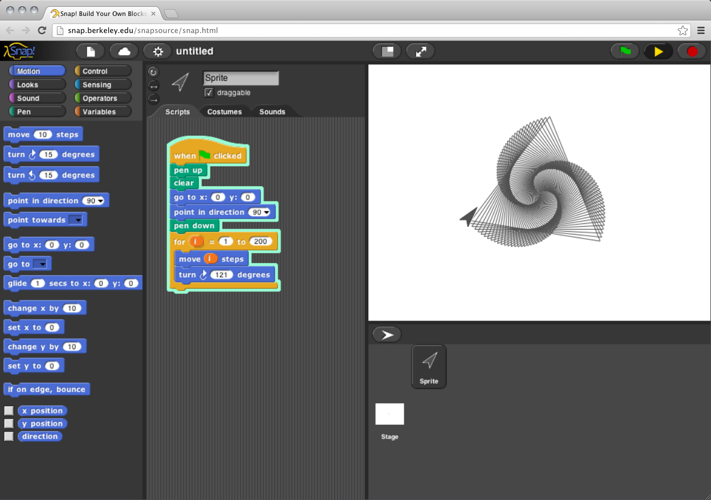

What is ?
Snap! (formerly BYOB) is a visual, drag-and-drop programming language. It is an extended reimplementation of Scratch (a project of the Lifelong Kindergarten Group at the MIT Media Lab) that allows you to Build Your Own Blocks. It also features first class lists, first class procedures, and continuations. These added capabilities make it suitable for a serious introduction to computer science for high school or college students.

Snap! runs in your browser. It is implemented using Javascript, which is designed to limit the ability of browser-based software to affect your computer, so it's safe to run even other people's projects, even if you don't trust our competence or good intentions.
Snap! is presented by the University of California at Berkeley. It was developed by Jens Mönig at MioSoft Corporation, with design input and documentation by Brian Harvey at Berkeley, and contributions by students at Berkeley and elsewhere.
This material is based partly upon work supported by the National Science Foundation under Grant No. 1138596. Any opinions, findings, and conclusions or recommendations expressed in this material are those of the author(s) and do not necessarily reflect the views of the National Science Foundation.